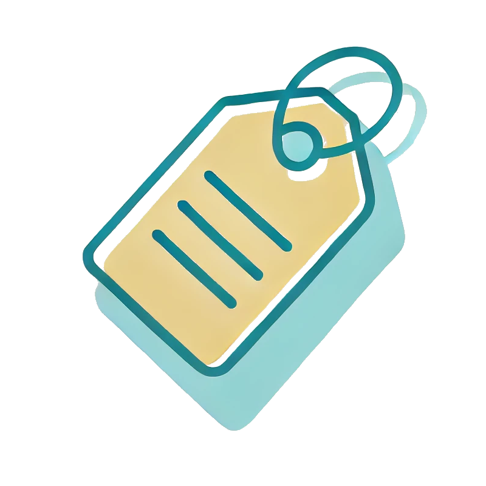

LabelPal
Labels
Open settings to add a label and get started
Timestamps
How to use this add-on:
- Enter a project name (optional).
- Add labels with associated time windows.
- Select the labels you want to apply.
- Click "Record Timestamp" to capture the current video time.
- Review your recorded timestamps.
- Export your data to JSON or YAML when finished.
- To return to sidebar from pop-up, simply close the window and re-open the add on
When exporting to YAML we supply a start and end timestamp -/+ time window seconds.
When exporting to JSON just supply the explicit timestamp.
If you are playing a video and get:
"Error: Unable to get current video time. Make sure you're on a page with a video playing."
Close and re-open the add on. This might happen after initially loading the temporary extension in about:debugging#/runtime/this-firefox